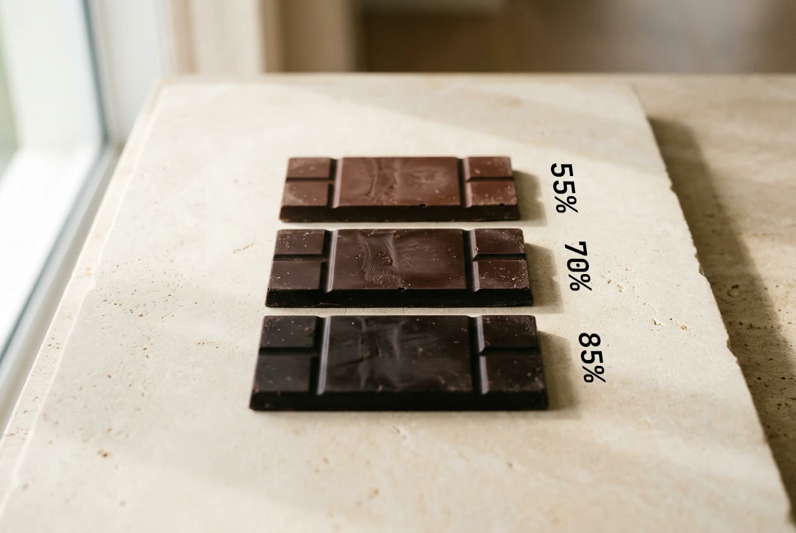

VERYGOOD JOURNAL · BUYING & READING LABELS
Editorial Guide · 4 min read · Understanding Cocoa Percentage & Labels
You pick up a 70% dark chocolate bar, then notice an 85% bar sitting right beside it. Does the bigger number automatically mean better chocolate?
In practice, the cocoa percentage tells you the total share of cocoa-derived ingredients in the bar. It does not give you a complete score for flavour, texture, or how much you will enjoy eating it.[4]
Think of the number on the front as a helpful starting point—and then turn the wrapper over to read the full story.

A higher percentage signals a larger share of cocoa-derived ingredients, but the front number alone never tells you the exact balance of cocoa mass and cocoa butter.[4]
Lindt explains that a bar’s cocoa percentage covers all ingredients derived from the cocoa bean—including both cocoa mass (cocoa solids) and cocoa butter.[4]
That means “70% cocoa” is not another way of saying “70% dry cocoa powder.” Nor does the headline percentage tell you the exact split between cocoa mass and cocoa butter inside that 70% share.
If you have been choosing chocolate by a single large number on the front, the ingredient list on the back adds the context that the front wrapper leaves out.
WHAT THE NUMBER TELLS YOU
One bar, two parts of the label
70% Cocoa Share
30%
70% COCOA-DERIVED TOTAL
Combines cocoa mass and cocoa butter from the bean
30% REMAINING INGREDIENTS
Sugar and any other recipe ingredients (not automatically all sugar)
The headline percentage does not disclose the individual ratio of cocoa mass to cocoa butter.[4]
Within a single range, Lindt describes higher cocoa percentages as a guide towards deeper cocoa intensity and less sweetness.[4] That makes the number a helpful signpost for where to start—though never a guarantee that you will prefer the next step up.
Flavour also depends on the recipe, bean origin, fermentation, roasting, and conching. Callebaut identifies each of these as core taste drivers, which is why two bars with the exact same percentage can taste remarkably different.[2]
Start with the flavour profile you actually feel like eating. If you enjoy a rounder, sweeter finish, there is little reward in buying a more astringent bar simply because a higher percentage looks more impressive on the wrapper.
Avoid estimating sugar content simply by subtracting the cocoa percentage from 100. Because other ingredients may sit in that remaining share, the nutrition information panel’s sugars row is the reliable place to look.
When comparing two packaged bars, check the “per 100 g” column rather than the per-serving column. Food Standards Australia New Zealand (FSANZ) notes that the per 100 g column provides a consistent benchmark, whereas serving sizes are set by individual manufacturers and often vary.[7]
TURN THE PACK OVER
Three places to look next on the label
01 · Ingredient List
Check the cocoa components and see what other ingredients are included.
02 · Sugars (per 100 g column)
Compare both bars on the same 100 g basis rather than varying serving sizes.[7]
03 · Allergen Declarations
Review bold “Contains” declarations and any “May contain” statements.[6]
DIETARY & ALLERGEN CHECK
A high cocoa percentage is never an automatic dairy-free guarantee. For example, the Australian ingredient list for Lindt EXCELLENCE 78% Cocoa includes milk fat.[10]
Always check the current wrapper before buying. FSANZ explains that a mandatory “Contains” statement identifies declared allergens intentionally present in the recipe, while voluntary “May contain” wording indicates possible unintended cross-contact during manufacture.[6]
If an allergy affects your choice, read the full allergen declaration and ask the supplier whenever you need confirmation. Neither the words “dark chocolate” nor a high percentage on the front can replace that check.[6]
Use the cocoa percentage to narrow your options, then look at the flavour notes, ingredient list, and texture description. If you want to compare sweetness, check the per 100 g sugars row; if you have dietary requirements, read the allergen declarations.
Each part of the wrapper answers a different question—and choosing chocolate should never feel like a competition to buy the highest number on the shelf.
YOUR LABEL-READING CHECKLIST
01 · Read the Cocoa Share
Treat 70% as the combined total of cocoa mass and cocoa butter, not dry cocoa powder alone.[4]
02 · Choose Your Flavour Profile
Look beyond intensity to roasted, fruity, or creamy notes that suit your palate.[2]
03 · Compare per 100 g
Use the per 100 g sugars row on the nutrition panel rather than varying serving sizes.[7]
EXPLORE VERYGOOD · SYDNEY
Explore thoughtfully crafted chocolate cakes and desserts
Browse verygood’s current dessert collection in Sydney, and review each product’s flavour notes, ingredient list, and allergen information before ordering.
Sources & References
[2] Callebaut — Taste and mouthfeel sensory guide (https://www.callebaut.com/en/products/taste-wheel)
[4] Lindt — What cocoa percentage means in EXCELLENCE high-cocoa bars (https://chocolate.lindt.com/excellence/excellence-high-cocoa)
[6] Food Standards Australia New Zealand (FSANZ) — Allergen labelling (https://www.foodstandards.gov.au/consumer/labelling/allergen-labelling)
[7] Food Standards Australia New Zealand (FSANZ) — Nutrition information panels (https://www.foodstandards.gov.au/consumer/labelling/panels)
[10] Lindt Australia — EXCELLENCE 78% Cocoa 100g ingredient list (https://www.lindt.com.au/lindt-excellence-78-cocoa-100g)